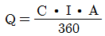
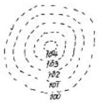
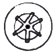
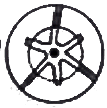
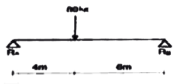
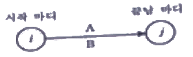
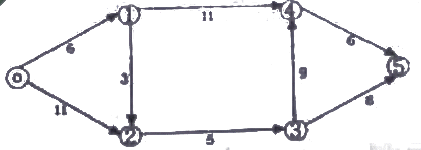
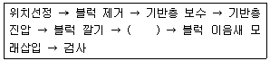
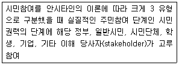

조경산업기사 (2007-05-13 기출문제)
1과목: 조경계획 및 설계
1. 다음 중 적정 이용객 수에 대한 설명으로 틀린 것은?
- 사회적 수요가 생태적 수요 능력을 넘지 않을 경우에는 사회적 수요를 기준으로 한다.
- 사회적 수요가 생태적 수요 능력을 넘는 경우에는 생태적 수요를 기준으로 한다.
- 사회적 수요가 생태적 수요능력을 넘는 경우에는 입장객 수를 제한하는 방법으로 대처한다.
- 사회적 수요가 생태적 수요를 훨씬 초과할 경우에는 최대일 이용자 수를 낮게 적용하여 산출한다.
(정답률: 79%)

2. 중국정원에서 영대(靈臺)가 있었던 나라는?
- 주나라
- 수나라
- 송나라
- 한나라
(정답률: 59%)
3. 주거단지에서 쿨데삭(cul-de-sec)도로의 설치 목적으로 가장 적합한 것은?
- 차량으로 부터 분리된 안전한 녹지를 확보할 수 있다.
- 차량동선을 짧게 할 수 있다.
- 보행동선을 짧게 할 수 있다.
- 상가 이용이 편리하다.
(정답률: 84%)
4. 우리나라의 도시공원 및 녹지 등에 관한 법률상 그 기능 및 주제에 따른 도시공원의 세분화에 해당하지 않는 것은?
- 문화공원
- 수변공원
- 지구공원
- 역사공원
(정답률: 65%)
5. 주택 단지 조경계획서 보차 분리를 위하여 실시되는 기법이라고 할 수 없는 것은?
- 평면적 분리 수법
- 시간적 분리 수법
- 입체적 분리 수법
- 심리적 분리 수법
(정답률: 57%)
6. 자연공원을 계획하기 위하여 조사분석시 인문사회 환경의 조사 항목은?
- 식생조사
- 수문조사
- 리모트센싱에 의한 환경조사
- 토지이용조사
(정답률: 93%)
7. 다음 중 삼국사기에 기록된 것으로 828년 홍덕왕(哄德王)때 대렴(大廉)이 당(唐)에 갔다 오면서 차(茶)의 종자를 가지고 와서 차를 심었던 곳은?
- 지리산(地理山)
- 토함산(吐含山)
- 경주 남산(南山)
- 해남 대흥사(大興寺)
(정답률: 55%)
8. 전혀 관계없는 몇 조(組)의 전문가 그룹으로 하여금 유기적으로 체계화된 몇 개의 계획안을 만들게 하여 그 가운데서 주민 또는 이용자가 가장 좋다고 생각하는 하나의 안(案)을 고르는 계획 과정은?
- 단일형 과정
- 반복형 과정
- 연환형 과정
- 선택형 과정
(정답률: 85%)
9. 다음 중 고속도로 주변 경관의 설계시 제 1차적으로 고려해야 할 사항은?
- 인간 척도
- 배수
- 속도 척도
- 성토와 절토
(정답률: 73%)
10. 환경적으로 건전하고 지속 가능한 개발(ESSD)에 대해서는 많은 해석이 있는 데 다음 중 골자를 이루고 있는 개념이 아닌 것은?
- 효율적인 개발
- 세대 간의 형평성
- 환경용량 한계 내에서의 개발
- 사회정의적 관점에서의 개발
(정답률: 40%)
11. 젊었을 때 중국을 다녀와서 정자나 탑 또는 다리 등의 중국식 수법을 영국식 정원 양식에 가미한 사람은?
- 험프리 렙턴(Humphrey Repton)
- 윌리암 켄트(William Kent)
- 란셀로트 부라운(Lancelot Brown)
- 윌리엄 챔버(William Chamber)
(정답률: 47%)
12. 울창한 침엽수나 연못의 검푸른 수면의 느낌은?
- 생동적이다.
- 환희적이다.
- 엄숙하다.
- 우아하다.
(정답률: 80%)
13. 다음 중 레드번(Radburn)계획의 특징이 아닌 것은?
- 단지 내를 관동하는 통과교통을 허용하였다.
- 주택지에는 막다른 길(cut-de-sac)을 설치하였다.
- 대가구(大街區, super-block)개념을 최초로 도입하였다.
- 단지 중심부에는 근린시설과 공원을 배치하였다.
(정답률: 73%)
14. 모모야마(椰山)시대 석등, 세수통 등 점경물을 설치하고 소공간을 자연 그대로의 규모로 꾸민 정원 양식은?
- 정토정원
- 고산수정원
- 다정
- 침전식정원
(정답률: 89%)
15. 영향평가와 관련해서 각 평가분야별 중앙행정기관의 연결이 틀린 것은?
- 환경영향평가분야 : 환경부
- 교통영향평가분야 : 건설교통부
- 재해영향평가분야 : 소방방재청
- 인구영향평가분야 : 통계청
(정답률: 50%)
16. 자전거이용시설의 구조ㆍ시설기준에 관한 내용이 틀린 것은?
- 자전거도로의 폭은 1.1미터 이상으로 한다.
- 자전거도로의 양측에 0.8미터 이상의 갓길을 설치해야 한다.
- 자전거전용도로의 설계속도는 30킬로미터/시 이다.
- 설계속도 20킬로미터/시 이상에서는 15미터 이상의 정지시거를 확보해야 한다.
(정답률: 39%)
17. 축척 1/10000, 1/25000 지형도의 주곡선 간격은 각각 몇 m 인가?
- 1m, 2m
- 5m, 10m
- 10m, 20m
- 50m, 100m
(정답률: 67%)
18. 옥상정원을 설계할 때 고려하여야 할 필수사항으로서 가장 관련이 적은 것은?
- 하중
- 배수
- 관수
- 조명
(정답률: 88%)
19. 도시공원 및 녹지 등에 관한 법률상 도시공원의 규모 기준이 틀린 것은?
- 근린생활권 근린공원 : 1만제곱미터 이상
- 도보권 근린공원 : 5만제곱미터 이상
- 도시지역권 근린공원 : 10만제곱미터 이상
- 광역권 근린공원 : 100만제곱미터 이상
(정답률: 67%)
20. 우리나라 조선시대의 민간정원의 특색에 관한 기술 중에서 옳지 않는 것은?
- 후원양식이었다는 기록은 해동잡록(海東雜碌)에 적혀 있다.
- 십장생(十長生)이나 수복무늬를 넣은 화담을 쌓아 올렸다.
- 장원서에서 정원사 구실을 하는 원유가 임명되었다.
- 정삼수(庭心讐)를 중문 앞에 심었다.
(정답률: 30%)
2과목: 조경식재
21. 일반적으로 수목의 생육지를 온난지와 한냉지로 구분할 수 있는데 그 중 온난지의 생육에 적합한 수중들로만 구성된 것은?
- 녹나무, 은행나무, 일본잎갈나무
- 눈주목, 후박나무, 박태기나무
- 당단풍나무, 자작나무, 유키
- 가시나무, 동백나무, 돈나무
(정답률: 39%)
22. 다음 녹음수가 갖추어야 할 조건 중 부적합한 것은?
- 수관(crown)이 커야 한다.
- 지하고(枝下高)가 낮아야 한다.
- 여름에는 짙은 그늘을 주고 겨울에는 낙엽 지어 햇빛을 가리지 않아야 한다.
- 나무 주위를 밟아 다져도 생육에 별 지장이 없는 수종이라야 한다.
(정답률: 84%)
23. 다음 중 내조성(耐潮性)이 강한 수종은?
- Picea ables
- Pinus densillora
- Torreya nucifera
- Cryptomeria japonica
(정답률: 19%)
24. 지구 환경을 구성하는 삼림 생태계 및 그와 관련된 조경과의 관계 설명으로 부적합한 것은?
- 식물천이의 결과 극성상에 있는 삼림에서는 물질순환과 에너지순환이 평형상태를 유지한다.
- 안정된 삼림을 관통하는 산악도로 개설시 조경계획으로 써 당면과제는 주변 생태계의 안정 육성지향이다.
- 삼림생태계가 관련되는 조경대상은 도시근교림, 국ㆍ도립공원 지대도 포함된다.
- 조경가는 생물자연환경의 특성은 숙지해야 하나 삼림생태계 내에서 일어나는 식생구조와 경관의 특징까지는 파악대상이 아니다.
(정답률: 79%)
25. 다음 수목 중 차광율이 가장 높은 것은?
- 광나무 생울타리
- 가이즈까향나무 생울타리
- 사찰나무 생울타리
- 쥐똥나무 생울타리
(정답률: 73%)
26. 잎이 나기 전에 개화하는 수목이 아닌 것은?
- Rhododendron schlippenbachii
- Prunus mume
- Magnolia denudata
- Cercis chinensis
(정답률: 71%)
27. 10dB의 소음을 감쇠 시키려면 수고가 높은 수림지가 얼마 이상의 너비를 가지고 조성되어야 하는가?
- 15m 이상
- 20m 이상
- 25m 이상
- 30m 이상
(정답률: 30%)
28. Zelkova serrata Makino 수종의 생태적 특성으로 옳은 것은?
- 내음성이 강하다.
- 내공해성이 강하다.
- 이식이 어렵다.
- 내한성이 강하다.
(정답률: 37%)
29. 이식한 수목의 지엽을 자르거나 전정을 하는 이유는?
- 생장을 촉진시키기 위하여
- 개화결실을 촉진시키기 위하여
- T/R율의 균형을 위하여
- C/N율의 균형을 위하여
(정답률: 54%)
30. 토양이 척박한 지역에는 질소고정 식물을 우선적으로 식재하는 것이 바람직한데, 다음 중 콩과의 질소고장 수목이 아닌 것은?
- 족제비싸리
- 자귀나무
- 오리나무
- 아까시나무
(정답률: 50%)
31. 천근성 교목의 생육을 위한 최소한의 토양깊이는?
- 30cm
- 45cm
- 90cm
- 120cm
(정답률: 67%)
32. 목련류(magnolia) 중에서 상록성인 것은?
- 함박꽃나무
- 태산목
- 일본목련
- 자목련
(정답률: 90%)
33. 식재기반조성에 관한 설명으로 옳은 것은?
- 식재토양은 정밀토양검사를 반드시 실시한다.
- 소관목의 생육 최소 토양 깊이는 90cm로 한다.
- 식재지의 토양은 유기물 함량이 충분해야 한다.
- 임해매립 지반은 최소한 0.5m이상 성토한다.
(정답률: 72%)
34. 일반적으로 방풍림에서 바람 아래쪽(風下饗)의 수고의 몇배 거리에 해당하는 지점에서 풍속의 65% 정도로 감쇠 효과가 있는가?
- 수고의 1~2배
- 수고의 3~5배
- 수고의 6~8배
- 수고의 10배 이상
(정답률: 75%)
35. 다음 중 낙엽 침엽수가 아닌 수종은?
- 낙엽송
- 메타쉐쿼이아
- 은행나무
- 히말라야시다
(정답률: 50%)
36. 다음 중 내화성(耐火)性이 강한 수종은?
- Pinus densiflora
- Cryptomeria japonica
- Torreya nucifera
- Ginkgo biloba
(정답률: 46%)
37. 정원 수목의 수형에 가장 예민하게 영향을 미치는 인자는?
- 수분
- 영양분
- 광선
- 품종
(정답률: 72%)
38. 관찰자의 시야에서 볼 때 앞에서 뒤로 향하여 고운 질감 = 중간 질감 - 거친 질감으로 식재구성을 하면 어떠한 공간의 효과를 나타내는가?
- 더욱 멀리 보인다.
- 더욱 가깝게 보인다.
- 팽창되는 느낌을 보인다.
- 혼란스런 느낌을 준다.
(정답률: 67%)
39. 토양 속에서 식물과 수분의 관계를 원활히 하기 위한 대책으로 틀린 것은?
- 지하수위가 높은 경우에는 종횡으로 배수구를 파서 수위를 낮춘다.
- 지표가 다져져 있으면 표토를 갈아 수분의 흡수가 원활하게 한다.
- 지하수위가 낮은 경우에는 식재 예정 지하부에 불투수층(不透水層)을 만든다.
- 수목의 환경으로서는 지하 수위가 대략 1.5m ~ 2.5m 정도가 좋다.
(정답률: 39%)
40. 지미식물의 규격표시 방법으로 틀린 것은?
- 노지나 온실에서 분화재배에 잘 견디는 식물은 포트 단위로 한다.
- 새끼치기를 하여 번식하는 식물은 분열 수로 한다.
- 목본성 식물 중 곁가지가 뻗는 것은 분지 수, 생육년수, 지상부의 생장길이로 한다.
- 다년생 자생식물은 대부분 노지에서 재배하므로 수목 규격으로 한다.
(정답률: 73%)
3과목: 조경시공
41. 공사설계 내역서 산정시 1원 단위 이상이 아닌 것은?
- 설계서의 소계
- 설계서의 금액란
- 일위대기표의 계금
- 일위대기표의 금액란
(정답률: 42%)
42. 우수유출량의 산정 (

)시 관계가 없는 것은?- 총강수량
- 유출계수
- 강우강도
- 배수면적
(정답률: 73%)
43. 이장용 마감 바르기용 모르타르 배합이 1:3일 경우 m3당 할증이 포함된 개략 시멘트량으로 적합한 것은?
- 1093kg
- 750kg
- 510kg
- 380kg
(정답률: 60%)
44. 콘크리트 포장의 줄눈의 설치에 관한 설명으로 틀린 것은?
- 신축/팽창 줄눈은 온도의 변화로 인한 수축, 팽창에 의해 생기는 파손을 막기 위한 것이다.
- 시공 줄눈(construction joint)은 콘크리트 시공상 필요에 의해서 콘크리트 타설을 중단하는 위치에 설치하는 이음이다.
- 포장 면이 기존 구조물과 만나는 곳에는 수축 줄눈(contraction joint)을 설치한다.
- 콘크리트 경화 시 수축에 의한 균열을 방지하고, 슬래브에서 발생하는 수평 움직임을 조절하기 위하여 조절줄눈(control joint)을 설치한다.
(정답률: 62%)
45. 시멘트에 대한 설명으로 틀린 것은?
- 분말도가 고울수록 조기강도는 커진다.
- 시멘트는 제조 직후 보다 장기간 저장하여 사용 해야 강도가 커진다.
- 일반적으로 온도가 높을 수록 응결은 빨라진다.
- 시멘트의 강도는 시멘트의 조성, 물ㆍ시멘트비, 재령 및 양생 조건 등에 따라 달라진다.
(정답률: 74%)
46. 다음 중 사면붕괴에 가장 큰 영향을 미치는 것은?
- 자유수
- 흡착수
- 화학 결합수
- 모관수
(정답률: 98%)
47. 조경 시공관리의 3대 관리 기능이 아닌 것은?
- 공정관리
- 설계도서관리
- 품질관리
- 원가관리
(정답률: 85%)
48. 표고 100m로 표시된 등고선의 면적이 55m2, 101m로 표시된 곳의 면적이 45m2, 102m로 된 곳은 35m2, 103m로 된 곳은 25m2, 104m로 된 곳은 15m2이다. 표고 100m로 평탄지를 만들기 위해 절토를 할 때 절토의 양은?

- 50m3
- 75m3
- 140m3
- 180m3
(정답률: 63%)
49. 다음 힘에 대한 설명 중 틀린 것은?
- 힘의 3요소란 힘의 크기, 방향, 농도를 말한다.
- 1개로 대치된 힘을 여러 개의 힘들에 대한 합력이라 한다.
- 1개의 힘이 2개 이상의 힘으로 나누어진 것을 분력이라 한다.
- 힘의 어느 한 점에 대한 회전 능력을 모멘트라 한다.
(정답률: 67%)
50. 어느 파고라의 전체 바닥 면적을 산출하였더니 100m2가 되었다. 파고라 기둥 한 개의 바닥 면적은 0.02m2이고, 전체 기둥은 4개이다. 전체 바닥을 벽돌로 포장할 경우 표준품셈상의 벽돌 포장 면적은?
- 99m2
- 99.9m2
- 99.92m2
- 100m2
(정답률: 31%)
51. 할증률에 대한 설명으로 틀린 것은?
- 잔디의 할증률은 5%이다.
- 조경수목의 할증률은 10%이다.
- 시멘트의 할증률은 정치식 일 때는 2%이다.
- 품행의 각 항목에 할증률이 포함 또는 표시되어 있는 것도 있다.
(정답률: 알수없음)
52. 용적배합비 1:2:4 콘크리트 1m3을 제작하기 위해서는 시멘트는 320kg이 소요된다. 이 콘크리트 10m3가 필요할 경우, 포대 시멘트는 얼마나 필요한가? (단, 시멘트 1포대는 40kg이다.)
- 8포대
- 16포대
- 80포대
- 160포대
(정답률: 67%)
53. 재료의 역학적(力學的) 성질에 대한 설명 중 응력(應力, stress)의 설명으로 옳은 것은?
- 구조물에 작용하는 외력(外力)
- 외력에 대하여 견디는 성질
- 구조물에 작용하는 외력에 대응하는 내력(內力)의 크기
- 구조물에 하중이 작용할 때 저항하는 재료의 능력
(정답률: 53%)
54. 표준품셈 중 토공에서 절취와 터파기의 기준이 되는 깊이는 원지반으로 부터 몇 m를 기준으로 하는가?
- 10cm
- 15cm
- 20cm
- 30cm
(정답률: 70%)
55. 다음 그림 중 뿌리돌링의 평면도로 가장 적합한 것은? (단, 작은 원은 뿌리분 크기이고, 뿌리의 검은 시선은 환상 박피한 것이다.)


(정답률: 47%)
56. 지점 Ra에 작용하는 반격은?

- 32kg
- 40kg
- 60kg
- 80kg
(정답률: 19%)
57. 철근이 D16, L=6m 인 10개의 중량은 얼마인가? (단, D16의 단위중량은 1.56kg/m 이다.)
- 46.8kg
- 93.6kg
- 187.2kg
- 280.8kg
(정답률: 77%)
58. 네트워크 공정표의 기본 구성요소인 결합점과 액티비티에서 A와 B에 들어갈 내용이 바르게 짝지어진 것은?

- A : 작업기간, B : 작업명
- A : 작업명, B : 작업기간
- A : 작업명, B : 작업순서
- A : 작업순서, B : 작업기간
(정답률: 65%)
59. 다음 등고선의 성질을 설명한 것 중 틀린 것은?
- 경사는 등고선이 조밀해 짐에 따라서 급하게 된다.
- 철(
 ) 경사에서 높은 쪽의 등고선은 낮은 쪽의 등고선의 간격보다 더 넓게 되어 있다.
) 경사에서 높은 쪽의 등고선은 낮은 쪽의 등고선의 간격보다 더 넓게 되어 있다. - 유수(誘水)는 등고선에 평행한 방향으로 흐른다.
- 하나의 등고선 상의 모든 점은 같은 높이다.
(정답률: 67%)
60. 다음 네트워크 공정표의 최장 소요 공기는?

- 24일
- 27일
- 31일
- 33일
(정답률: 82%)
4과목: 조경관리
61. 보호 살균제로 많이 쓰이고 있는 보르도액에 대한 설명 중 틀린 것은?
- 보르도액은 황산등과 생석회로 조제한다.
- 만든 후 곧 바로 뿌려야 효과적이다.
- 황산구리액에다 석회류를 가해야 안전하게 혼합이 잘 된다.
- 전착제를 가해서 고압 분무기로 살포한다.
(정답률: 70%)
62. 다음 중 조경 수목의 관리상 저온에 대한 피해를 최소화하려는 저온 방지대책과 무관한 것은?
- 낙엽이나 피트모스(peatmoss) 등을 피복재료(mulch)로 사용한다.
- 강정지, 강전정을 실시한다.
- 액체 피막제(wilt-pruf)를 잎에 샆포한다.
- 바람막이를 설치한다.
(정답률: 72%)
63. 관수(瓘水)시 일반적으로 유의하여야 할 점으로 틀린 것은?
- 여름철의 관수 시간은 기온, 저온이 높지 않은 이른 아침이 좋다.
- 관수는 시간을 두고 토양 깊숙이 침투할 정도로 실시하고, 지표면에 물이 고이지 않을 정도로 하여야 한다.
- 관수는 소량의 물을 매일 주는 것이 가장 좋다.
- 관수는 충분한 양의 물을 주되 겉흙이 마를 때 하는 것이 좋다.
(정답률: 93%)
64. 조경공사 표준시방서에서 동해의 우려가 있거나 온난한 지역에서 생육한 수목 등을 식재 하였을 때 일반적으로 기온이 어느 정도 이하로 떨어지면 월동작업을 해야 하는가?
- 영하 5℃ 이하
- 영하 10℃ 이하
- 영하 15℃ 이하
- 영하 20℃ 이하
(정답률: 59%)
65. 배나무의 붉은 별무늬 병균의 기주 교대 식물로 옳은 것은?
- 향나무
- 전나무
- 잣나무
- 소나무
(정답률: 85%)
66. 다음 정원이나 밭에 잘 발생되는 잡초들 중 1년생 잡초는?
- 마디풀
- 개보리뺑이
- 망초
- 광대나물
(정답률: 28%)
67. 벤치의 콘크리트 뿜어 붙이기 보수시에 1회당 뿜어 붙이는 층은 몇 ㎝로 하는 것이 이상적인가?
- 0.5 ~ 1㎝
- 2 ~ 5㎝
- 6 ~ 8㎝
- 9 ~ 12㎝
(정답률: 82%)
68. 다음 중 잔디의 피티움마름병에 효과가 가장 큰 것은?
- 메타실엠수화제(리도밀엠지)
- 메타실ㆍ동수화제(리도밀동)
- 타로닐수화제(타코닐)
- 나크수화제(세빈)
(정답률: 54%)
69. 다음 [보기]에 인터로킹 블록 침하에 따른 보수 작업 순서 중 ( )에 적합한 것은?

- 기반 다지기
- 콤팩팅 작업
- 노반층 제거
- 모래 고르기
(정답률: 49%)
70. 한국잔디에서 고온기에 라이족토니아 솔라니 푸사리움 병원균이 발생되어 문제되는 병으로 치료가 힘든 병은?
- 라지 패취병
- 엽고병
- 옐로우 패취병
- 설부병
(정답률: 50%)
71. 1951년 레크리에이션 수용능력의 인자에 대한 최초의 연구를 수행한 사람은?
- La Page
- Lucas
- Rodgers
- J.V.Wager
(정답률: 80%)
72. 가로 조명등의 유지관리상 특징 설명으로 옳은 것은?
- 알루미늄 조명등은 부식에 강하고, 유지관리가 용이하며, 내구성도 크나 비용이 많이 든다.
- 콘크리트로 제조된 조명등은 유지관리가 용이하고 내구성도 강하지만 부식에는 약하다.
- 강철 조명등은 합금강철 조명등으로 제조되어 내구성이 강하고, 페넌트 부착에 강하지만 부식이 용이하여 채색이 요구된다.
- 나무로 만든 조명등은 미관적으로 좋고 초기에는 유지 관리하기도 좋아서 별다른 단점은 생각하지 않아도 좋다.
(정답률: 65%)
73. 다음 잡초 방제 설명으로 틀린 것은?
- 짚 멀칭도 잡초 방제의 효과가 있다.
- 제초제에는 2.4~D, 시마네제, 파미드제 등이 있다.
- 농약과 비료를 함께 뿌리는 것이 노력 절감이 되므로 되도록 혼용하여 사용한다.
- 시기적으로 몇 가지 제초제를 체계적으로 사용한다.
(정답률: 77%)
74. 다음 [보기]의 설명에 해당되는 시민참여의 형태는?

- 시민자치(citizen control)
- 파트너십(partnership)
- 상담자문(consultation)
- 조작(manipulation)
(정답률: 58%)
75. 다음 식물 병원체 중에서 크기가 작은 것은?
- 진균(곰팡이)
- 세균
- 선충
- 바이러스
(정답률: 75%)
76. 대부분의 곤충 가슴에 1쌍이 있으며, 2개가 합쳐지면서 임틀 안으로 소화효소를 분비하는데, 탄수화물을 분해하는 효소가 주성분인 소화계 기관은?
- 침샘
- 전장
- 중장
- 후장
(정답률: 44%)
77. 다음 전정 및 정지에 대한 설명 중 부적합한 것은?
- 산울타리의 경우 1년에 2~4회의 전정이 필요하다.
- 꽃이 피는 수목의 전정은 꽃이 진 직후가 좋다.
- 낙엽 활엽수의 전정은 낙엽 후인 10월 부터 12월까지가 적당하다.
- 나무의 생장 습성을 고려하여 위쪽은 약하게 아래쪽은 강하게 전정 한다.
(정답률: 43%)
78. 배수구의 평균유속이 0.5m/sec이고, 이 배수구의 횡단면은 가로 2m, 세로 1m 일 때 배수 유량은?
- 0.5m3/sec
- 1.0m3/sec
- 1.5m3/sec
- 2.0m3/sec
(정답률: 67%)
79. 수병치료를 위한 수간주사법에 대한 설명이 옳은 것은?
- 청명한 날의 낮 시간에 실시한다.
- 수간주사액은 주로 살균제 성분이다.
- 빗자루병의 치료에는 효과가 없다.
- 수피 두께 정도까지 바늘을 찌른다.
(정답률: 67%)
80. 조경 시설물의 유지관리 기준 설정시 고려사항이 아닌 것은?
- 이용밀도
- 장비의 효율성
- 날씨 및 지형
- 감독자의 수와 기술수준
(정답률: 41%)
사회적 수요가 생태적 수요를 넘지 않을 경우에도 생태적 수요를 고려해야 합니다. 생태적 수요를 고려하지 않으면 자원의 과다 이용으로 인해 환경 파괴가 발생할 수 있기 때문입니다. 따라서 사회적 수요와 생태적 수요를 모두 고려하여 적정 이용객 수를 산출해야 합니다.
"사회적 수요가 생태적 수요를 훨씬 초과할 경우에는 최대일 이용자 수를 낮게 적용하여 산출한다."는 적정 이용객 수를 산출하는 방법 중 하나입니다. 이 경우에는 생태계의 보전을 위해 최대일 이용자 수를 낮게 설정하여 자원의 지속 가능성을 고려합니다.